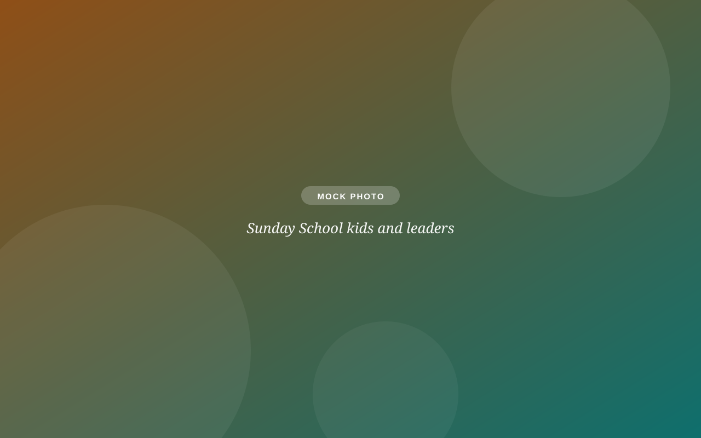
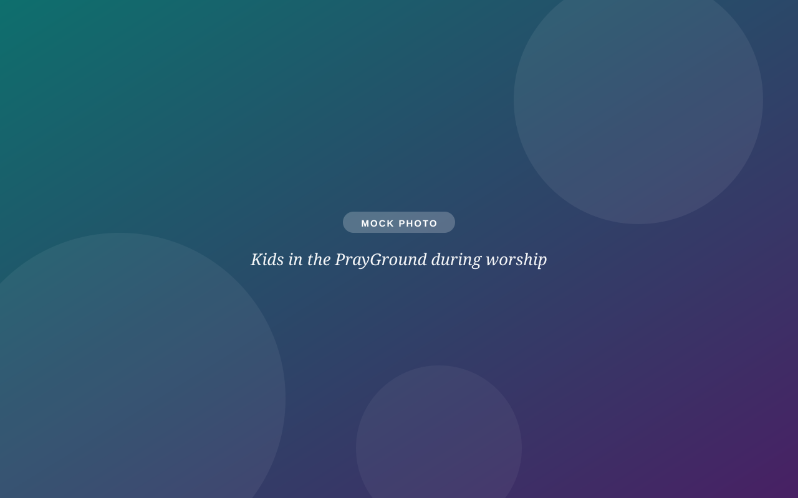
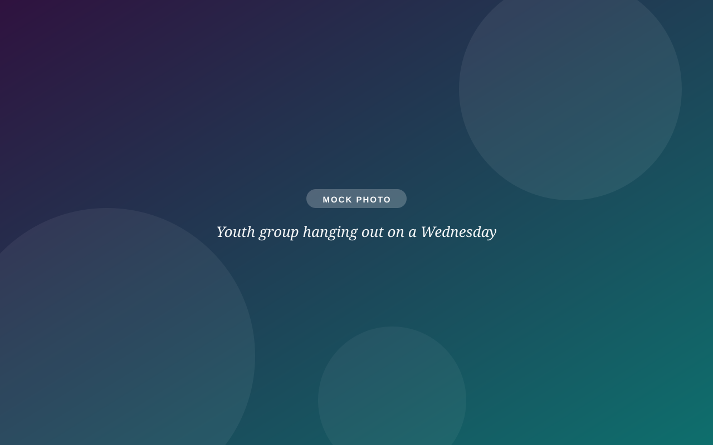

The PrayGround
A space right in the sanctuary where pre-readers can play, color, and stay connected to worship, with their grown-ups nearby.
Kids & youth
No one will shush your toddler here. From the PrayGround to confirmation to youth group, kids and teens are full participants in the life of this congregation: known by name, safe, and taken seriously.

Sunday mornings
A space right in the sanctuary where pre-readers can play, color, and stay connected to worship, with their grown-ups nearby.
Tactile activity bags for every service, and a nursery when little ones need a break.
PreK–grade 5, the first Sunday of each month during worship: stories, questions, and friends.
2nd & 4th Sundays (Sept–May), trained adult friends spend coffee hour with kids, so parents get adult conversation too.

Growing up at SOTH
We mark the journey on purpose, so kids know the church is paying attention to them.
Babies, kids, teens, adults. Talk to Pastor Yolanda; there's no waiting list for grace.
Kids learn what the open table means, and then they're at it, fully.
The congregation puts a Bible in every third-grader's hands, with their name on it.
Middle & high school
Confirmation (grades 6–8). A three-year journey through the Old Testament, New Testament, and Small Catechism, with affirmation of baptism as an invitation, never a requirement.
School yearYouth Group (grades 9–12). Friendship, service, honest conversation about faith, with no shallow answers to real questions.
School yearSummer Festival Camp at Gustavus Adolphus College. High school July 12–15, middle school July 19–22: a week of music, faith, and friends with youth from across the synod.
CampFor parents
2nd & 4th Sundays at 10:30: honest conversation with other parents, childcare provided.
Summer VBS in partnership with Good Samaritan UMC: a week of songs, crafts, and big welcome.
Block Party in September, Trunk or Treat in October, Turkey Bingo in November, the Live Nativity in December, and a spring family service project.
Screened and trained adult leaders in every kids' space, including Coffee Hour Buddies. Ask us about our safe-church practices anytime.

Questions about kids & youth?
Interim Children, Youth & Community Engagement, with 25+ years of ministry with kids and teens.
cyf@sothchurch.comTell us your kids' ages in a visit note and we'll have the right welcome ready: worship bags, PrayGround tour, the works.